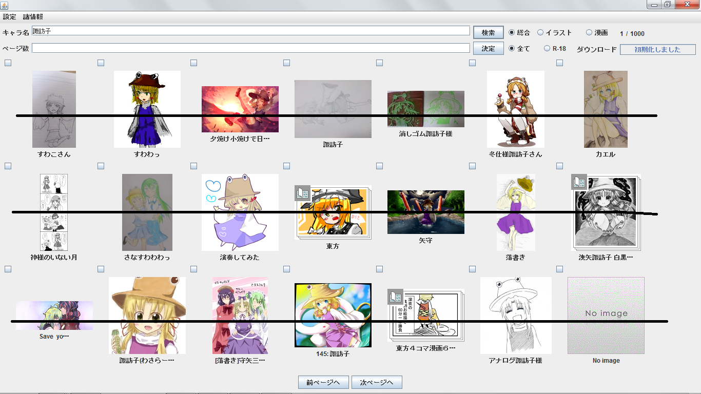
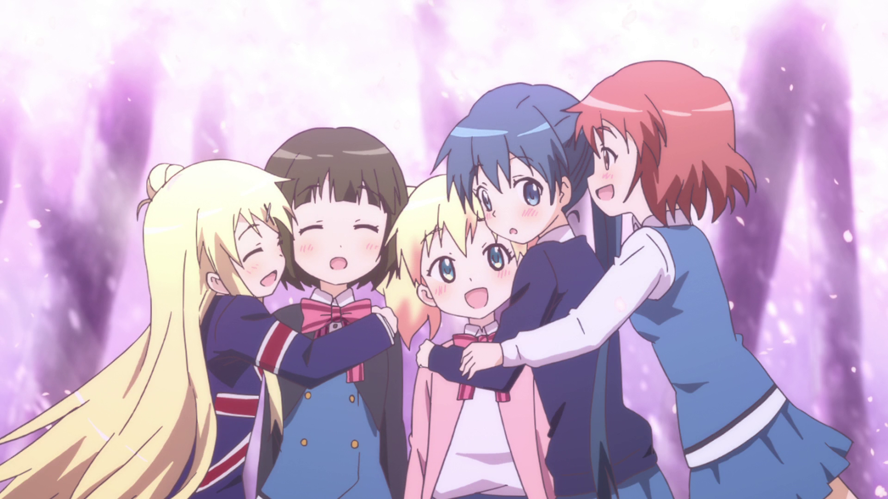
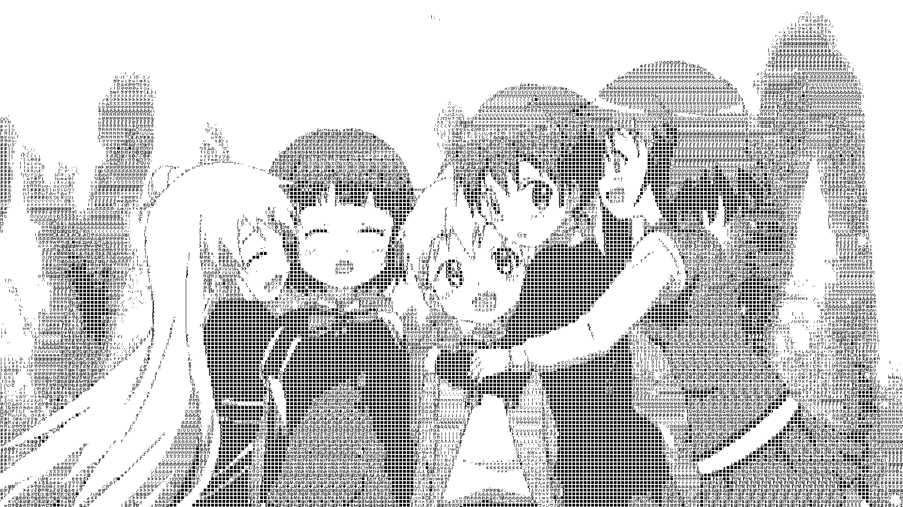

pixiveiwer、文字フォトの制作
制作者：siki
pixiveiwer

画像はクリックして拡大できます
制作者からの説明&一言！
Javaで作成した画像投稿サイトPIXIVを鑑賞，兼ダウンロードするためのプログラムです．
GUIはSwingで実現しています．
所持IDでのログインや保存場所の指定などは行うことができます．
初めは，ダウンロードの処理やログインの処理はRubyに行わせていたのですが，
scriptEngineを用いると処理が複雑になるうえデータの受け渡しなどが面倒だったので
HttpClientを用いることですべてJavaで実現することにしました．
正直，ブラウザを拡張した方がいいよね^^;
文字フォト
これを・・・

こうして・・・
こうじゃ！

画像はクリックして拡大できます。
制作者からの説明&一言！
昨年度先輩がやっていたのと同じようなソフトを作りました．
2値化と文字割り当てのプログラムは別に作成しました．
画像をグレースケール，二値化してその画像に適切な文字を割り当てたものです．
それにしてもopenmpのprefixは便利ですね．文字の割り当てが一気に早くなりました．
2013年岡山大学祭企画TOPに戻る
OUCRC TOPに戻る